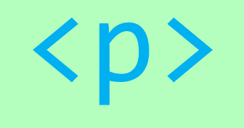

Beaver Valley Feeds Website

I am the sole designer and builder of beavervalleyfeeds.com, which attracts a new demographic of customers to my former employer. This website was built with the help of wix.com, and is my first website. The website was designed solely with the customer in mind, as both new customers and those that hae been clients for years had to be thought of, hence the simple, informative design with an emphasis on easy-to-use navigation and eye catching photography. Feel free to follow the link above and browse around my work!
Degree Planning App
To gain experience in Java and in mobile app development, I have completed an app that helps students plan their degree. It is currently available on the app store here. Planning what courses to take and when to take them is a headache that every student knows, and this is a tool to help alleviate some of that pain! The current version only supports the most basic class planning, but you can be certain that I am working on an update to offer the best product possible to my peers. It will have features that enable yearly class planning, GPA calculating, and semester planning with ease. The current version uses java as the source language (for more about my escapades with Kotlin, see the current projects section below). I have implemented many of the new android architecture components, such as the new Room Persistence Library and ViewModel class.
This website
This website has been designed and built from scratch with my knowledge of HTML5 and CSS3, and is my second website. This is the first Version of the website, last updated on June 28, 2019. Further updates are already in progress. While the current version does not use any javascript or plug-ins, they will be incorporated into future versions. It will be updated as I complete more projects, learn more skills, and have new design ideas for the website.